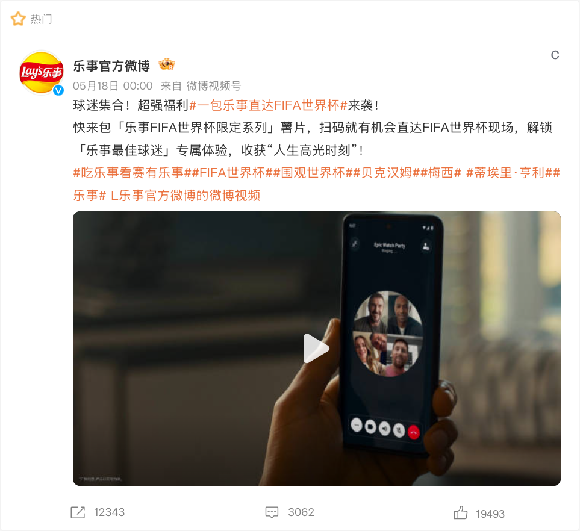
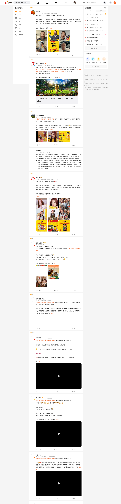

案例发生了什么

乐事以门票等稀缺体验激活购买，将低客单商品与高价值观赛梦想连接起来。
它解决的策略问题
这页要回答的不是“乐事：门票权益激活 是否参与世界杯”，而是它如何通过“FIFA 赞助 / 消费者促销”回应“以低门槛购买连接稀缺体验”这一业务问题。
资源如何变成行动
FIFA 赞助 / 消费者促销
把“以低门槛购买连接稀缺体验”从赛事术语翻译成用户能理解的产品、体验或情绪理由。
赛场/转播建立权威感，内容、零售、活动或服务负责把一次看见变成多次接触。
优先观察商品、门店、电商、会员或长期社区项目是否接住了赛事关注。
动作拆解
- 把购买转为参与抽取或体验资格。
- 用稀缺奖品提高包装和货架的注意力。
- 使消费者互动在赛前到赛中持续发生。
深度补充：从动作到复盘
以下字段用于把案例从“看过一个创意”推进到可执行、可衡量、可继续补证的研究对象。
以低门槛购买连接稀缺体验
赛事观众、品牌既有用户，以及可被官方权益转化的新客
FIFA 赞助 / 消费者促销
官方赛事资产、品牌内容、产品/服务、零售或会员触点
权益可见度、用户参与、产品/服务使用与商业转化的分层变化
促销机制需要同时解决“为什么现在买”和“买完还能期待什么”。
补齐“乐事：门票权益激活”的品牌/权利方原始发布、视频首帧与完整片、线下执行现场、投放日期、市场范围及可追溯效果口径。
传播与业务机制
官方身份提供可信起点，但传播效率取决于是否有可被球迷复述的具体动作。
让观众从“看见赞助商”走到观看、体验、收藏、互动或到店。
将权益落到产品、渠道或服务节点，避免赞助只停留在品牌曝光。
用长期主题、会员、数据或社区项目延长赛期之外的关系。
适用条件、风险与证据
- 需要明确权益能被调用的范围，而不是只记录赞助级别。
- 至少准备内容与商业两条承接线，防止资源只在比赛画面里出现。
- 复盘时区分赛事可见度、用户参与和实际业务结果，不能相互替代。
品牌与权威来源物料
这里只展示可追溯到品牌、权利方、官方账号或明确注明原始出处的真实物料；研究图卡不计入案例图片。

资料状态与补证方向
将全球赛事权益翻译为产品、体验与市场增长。 页面已记录参与路径、动作机制、证据状态与素材状态。
已归档素材状态为“有图”，下一步应继续补发布日期、投放场景和可归因效果。
尚未归档可独立验证的效果数据时，不以曝光推断销售，也不把平台整体数据归因到单一品牌。